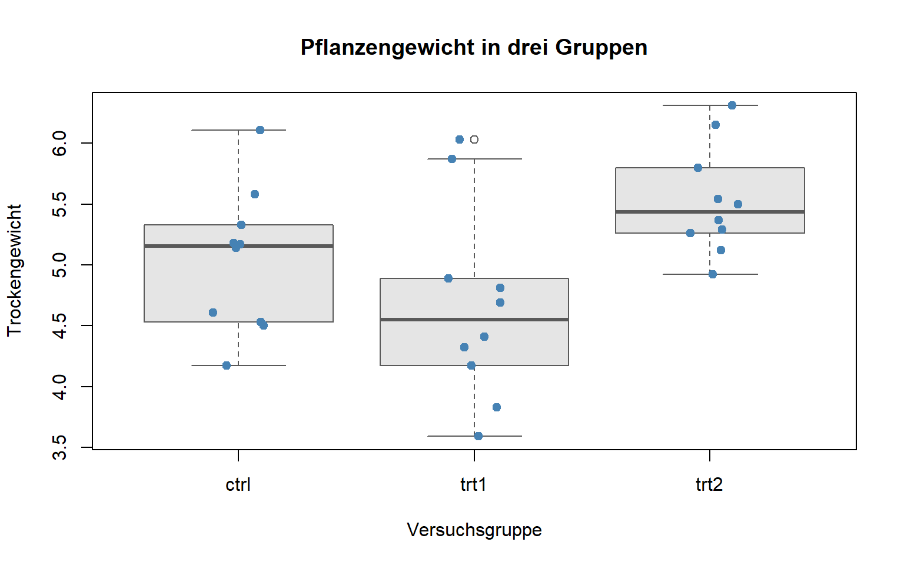
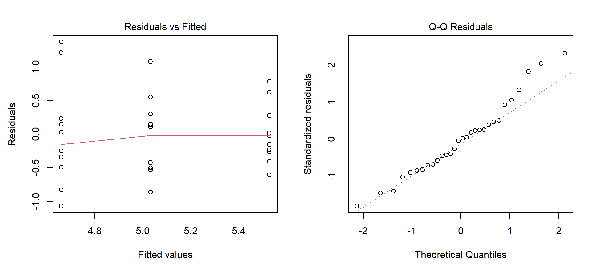

Einfaktorielle ANOVA mit R: Eine Schritt-für-Schritt-Anleitung
Mittelwerte vergleichen, Voraussetzungen prüfen und Ergebnisse interpretieren
Praxisorientierte Einführung in die einfaktorielle Varianzanalyse mit R und dem Datensatz PlantGrowth: explorative Analyse, F-Test, Diagnostik, Tukey-Test und Effektgröße.
ANOVA
R
Inferenzstatistik
Autor:in
Statistics Campus
Veröffentlichungsdatum
16. November 2026
1 Was wirst du lernen?
Die einfaktorielle Varianzanalyse (One-Way Analysis of Variance, ANOVA) prüft, ob sich die Mittelwerte einer metrischen Zielvariable zwischen mehreren unabhängigen Gruppen unterscheiden. In diesem Beitrag werden drei Gruppen mit R verglichen. Anschließend folgen die Interpretation des F-Tests, die Prüfung zentraler Voraussetzungen, ein Post-hoc-Vergleich und die Berechnung einer Effektgröße.
Vorkenntnisse: Mittelwert, Standardabweichung, Boxplot und Grundideen des Hypothesentestens. Der Beitrag richtet sich an Studierende in den ersten Studiensemestern, insbesondere in den Sozial- und Verhaltenswissenschaften.
2 Forschungsfrage und Datensatz
Als Beispiel dient PlantGrowth aus dem in R enthaltenen Paket datasets. Der Datensatz umfasst 30 Beobachtungen aus drei Gruppen mit jeweils zehn Pflanzen: eine Kontrollgruppe (ctrl) und zwei Behandlungsgruppen (trt1, trt2). weight enthält das gemessene Trockengewicht der Pflanzen, group die Gruppenzugehörigkeit. Die Maßeinheit des Gewichts wird in der R-Dokumentation nicht angegeben. Sie wird daher hier nicht ergänzt (R Core Team, o. J.-a).
Forschungsfrage: Unterscheidet sich das mittlere Trockengewicht zwischen den drei Versuchsgruppen?
weight group
Min. :3.590 ctrl:10
1st Qu.:4.550 trt1:10
Median :5.155 trt2:10
Mean :5.073
3rd Qu.:5.530
Max. :6.310
colSums(is.na(pflanzen))
weight group
0 0
Der Datensatz ist klein und vollständig. Damit eignet er sich für die Einführung in die Methode, erlaubt jedoch keine pauschalen Aussagen über andere Pflanzenarten oder Anbaubedingungen.
3 Was prüft die ANOVA?
Bei zwei unabhängigen Gruppen kann ein t-Test verwendet werden. Bei drei oder mehr Gruppen erlaubt die ANOVA einen gemeinsamen Test der Mittelwertgleichheit, ohne mehrere ungeschützte Einzeltests durchzuführen (Eid et al., 2017; Agresti & Finlay, 2014).
\[
H_1: \text{Mindestens zwei Gruppenmittelwerte unterscheiden sich.}
\]
Die ANOVA vergleicht die Variation zwischen den Gruppen mit der Variation innerhalb der Gruppen. Ist die Variation zwischen den Gruppen im Verhältnis zur inneren Streuung groß, fällt die F-Statistik hoch aus. Ein signifikanter F-Test zeigt zunächst nur, dass nicht alle Populationsmittelwerte gleich sind. Welche Gruppen sich unterscheiden, muss separat untersucht werden.
4 Daten explorativ untersuchen
Vor jedem Signifikanztest empfiehlt sich ein Blick auf Gruppengrößen, Mittelwerte, Standardabweichungen und die beobachteten Verteilungen.
anzahl <-aggregate(weight ~ group, data = pflanzen, FUN = length)mittelwerte <-aggregate(weight ~ group, data = pflanzen, FUN = mean)streuungen <-aggregate(weight ~ group, data = pflanzen, FUN = sd)deskriptiv <-data.frame(Gruppe = anzahl$group,n = anzahl$weight,Mittelwert =round(mittelwerte$weight, 3),SD =round(streuungen$weight, 3))deskriptiv
Gruppe n Mittelwert SD
1 ctrl 10 5.032 0.583
2 trt1 10 4.661 0.794
3 trt2 10 5.526 0.443
set.seed(123)boxplot(weight ~ group, data = pflanzen,col ="gray90", border ="gray35",xlab ="Versuchsgruppe", ylab ="Trockengewicht",main ="Pflanzengewicht in drei Gruppen")stripchart(weight ~ group, data = pflanzen,vertical =TRUE, method ="jitter", jitter =0.12,pch =19, col ="steelblue", add =TRUE)

Abbildung 1: Trockengewicht nach Versuchsgruppe. Die Punkte zeigen einzelne Beobachtungen.
Die deskriptiven Mittelwerte betragen 5.032 (ctrl), 4.661 (trt1) und 5.526 (trt2). Diese Unterschiede allein entscheiden noch nicht darüber, ob ein statistisch belastbarer Gruppenunterschied vorliegt.
5 Einfaktorielle ANOVA in R berechnen
Die Funktion aov() aus dem mitgelieferten Paket stats passt das Modell an. Zusätzliche Pakete sind nicht erforderlich.
modell <-aov(weight ~ group, data = pflanzen)anova_tabelle <-summary(modell)[[1]]anova_tabelle
Df Sum Sq Mean Sq F value Pr(>F)
group 2 3.7663 1.8832 4.8461 0.01591 *
Residuals 27 10.4921 0.3886
---
Signif. codes: 0 '***' 0.001 '**' 0.01 '*' 0.05 '.' 0.1 ' ' 1
Die Formel weight ~ group bedeutet: Das Trockengewicht wird in Abhängigkeit von der Gruppenzugehörigkeit modelliert. Die Tabelle enthält unter anderem die Freiheitsgrade (Df), Quadratsummen (Sum Sq), mittleren Quadratsummen (Mean Sq), den F-Wert (F value) und den p-Wert (Pr(>F)).
F df_zwischen df_innerhalb p
4.84608786 2.00000000 27.00000000 0.01590996
Für die Beispieldaten ergibt sich F(2, 27) = 4.85 mit p = 0.0159. Beim vorab festgelegten Signifikanzniveau von 5 % wird die Nullhypothese gleicher Gruppenmittelwerte verworfen. Der Test sagt weder, dass jede Gruppe von jeder anderen abweicht, noch belegt er die Ursache des Unterschieds.
6 Voraussetzungen kritisch prüfen
Die klassische einfaktorielle ANOVA setzt insbesondere unabhängige Beobachtungen, eine näherungsweise Normalverteilung der Fehler innerhalb der Gruppen und vergleichbare Fehlervarianzen voraus. Die Unabhängigkeit folgt aus dem Studiendesign und lässt sich nicht durch einen Residuenplot nachträglich bestätigen (Eid et al., 2017).
alte_grafikparameter <-par(no.readonly =TRUE)par(mfrow =c(1, 2), mar =c(4.5, 4.5, 3, 1.5))plot(modell, which =1, id.n =0)plot(modell, which =2, id.n =0)par(alte_grafikparameter)

Abbildung 2: Modelldiagnostik: Residuen gegen vorhergesagte Werte und Normal-Q-Q-Diagramm.
Im Diagramm Residuals vs Fitted ist insbesondere auf unterschiedliche Streuungsbreiten und auffällige Einzelwerte zu achten. Im Q-Q-Diagramm sprechen starke systematische Abweichungen von der Referenzlinie gegen die Normalitätsannahme. Bei kleinen Gruppen sind solche Grafiken nur begrenzt aussagekräftig. Automatische Tests ersetzen die fachliche Prüfung nicht.
Eine ergänzende, relativ robuste Prüfung der Varianzgleichheit bietet der Fligner-Killeen-Test:
fligner.test(weight ~ group, data = pflanzen)
Fligner-Killeen test of homogeneity of variances
data: weight by group
Fligner-Killeen:med chi-squared = 2.3499, df = 2, p-value = 0.3088
Ein nicht signifikanter Test beweist keine gleichen Varianzen. Bei deutlich unterschiedlichen Varianzen ist die Welch-ANOVA eine wichtige Alternative, die sich ebenfalls mit Base R berechnen lässt:
oneway.test(weight ~ group, data = pflanzen,var.equal =FALSE)
One-way analysis of means (not assuming equal variances)
data: weight and group
F = 5.181, num df = 2.000, denom df = 17.128, p-value = 0.01739
Die Welch-ANOVA wird hier als Ausblick gezeigt. Sie ersetzt nicht automatisch die sorgfältige Wahl geeigneter anschließender Gruppenvergleiche.
7 Welche Gruppen unterscheiden sich? Tukey-Test
Nach dem gemeinsamen F-Test untersuchen Post-hoc-Vergleiche, zwischen welchen Gruppen Unterschiede liegen. TukeyHSD() kontrolliert die familienweise Fehlerwahrscheinlichkeit für die paarweisen Vergleiche im klassischen ANOVA-Modell (R Core Team, o. J.-b).
tukey <-TukeyHSD(modell, which ="group")tukey
Tukey multiple comparisons of means
95% family-wise confidence level
Fit: aov(formula = weight ~ group, data = pflanzen)
$group
diff lwr upr p adj
trt1-ctrl -0.371 -1.0622161 0.3202161 0.3908711
trt2-ctrl 0.494 -0.1972161 1.1852161 0.1979960
trt2-trt1 0.865 0.1737839 1.5562161 0.0120064
Die Spalte diff enthält die Mittelwertdifferenz, lwr und upr die Grenzen des simultanen Konfidenzintervalls sowie p adj den für Mehrfachvergleiche angepassten p-Wert. Im vorliegenden Beispiel ist der Unterschied zwischen trt1 und trt2 signifikant (p = 0.012). Die beiden Vergleiche mit der Kontrollgruppe erreichen dagegen das Niveau von 5 % nicht. Das bedeutet nicht, dass diese Gruppen in der Population identisch sind.
8 Wie groß ist der Gruppeneffekt?
Ein p-Wert allein beschreibt nicht die Größe eines beobachteten Effekts. Bei der einfaktoriellen ANOVA kann Eta-Quadrat (\(\eta^2\)) als Anteil der durch die Gruppenzugehörigkeit erklärten Variation an der Gesamtvariation berechnet werden:
Hier beträgt \(\eta^2\) = 0.264. Im vorliegenden Datensatz hängen damit rund 26.4 % der beobachteten Gesamtvariation des Trockengewichts mit den Gruppenunterschieden zusammen. Dies ist eine deskriptive Stichproben-Effektgröße, kein Beleg für Kausalität. Eine Einordnung als „klein“, „mittel“ oder „groß“ verlangt den jeweiligen fachlichen Kontext.
Zusammenhang zwischen Eta-Quadrat und R²
Bei der klassischen einfaktoriellen Varianzanalyse entspricht Eta-Quadrat (\(\eta^2\)) mathematisch dem Bestimmtheitsmaß (\(R^2\)) des äquivalenten linearen Regressionsmodells.
Beide Kennzahlen beschreiben den Anteil der beobachteten Gesamtvariation der abhängigen Variablen, der durch das Modell erklärt wird.
Im vorliegenden Beispiel mit dem Datensatz PlantGrowth beträgt dieser Anteil rund 26,4 %.
Während \(R^2\) häufig zur Beschreibung der Modellgüte verwendet wird, dient \(\eta^2\) in der Varianzanalyse zur Quantifizierung des Gruppeneffekts.
Wichtig: Diese Gleichheit gilt für die klassische einfaktorielle ANOVA und das entsprechende lineare Modell mit Achsenabschnitt. Bei mehrfaktoriellen Modellen und insbesondere beim partiellen Eta-Quadrat (\(\eta_p^2\)) ist diese Unterscheidung zu beachten.
9 Beispiel für einen wissenschaftlichen Ergebnisbericht
Eine einfaktorielle Varianzanalyse untersuchte Unterschiede im Trockengewicht zwischen einer Kontrollgruppe und zwei Behandlungsgruppen (N = 30). Der Gruppeneffekt war statistisch signifikant, F(2, 27) = 4.85, p = 0.016, \(\eta^2\) = 0.264. Tukey-adjustierte Paarvergleiche ergaben einen signifikanten Unterschied zwischen den beiden Behandlungsgruppen (p = 0.012), nicht jedoch zwischen den jeweiligen Behandlungsgruppen und der Kontrollgruppe. Die Interpretation setzt voraus, dass das Studiendesign und die Modellannahmen hinreichend geeignet sind.
10 Probiere es selbst aus
Welche Gruppe weist den höchsten Mittelwert auf, und reicht diese Information für eine Schlussfolgerung aus?
Ändert sich das ANOVA-Ergebnis, wenn die Gruppenbezeichnungen anders angeordnet werden?
Welche Informationen enthält ein Tukey-Konfidenzintervall zusätzlich zum angepassten p-Wert?
Warum lässt sich die Unabhängigkeit der Beobachtungen nicht aus einem Q-Q-Diagramm ableiten?
Vergleiche das Ergebnis von oneway.test() mit dem klassischen F-Test. Welche Modellannahme unterscheidet die beiden Verfahren?
11 Fazit
Die einfaktorielle ANOVA verbindet eine klare Forschungsfrage mit einem Modell zum Vergleich mehrerer Gruppenmittelwerte. Für eine nachvollziehbare Auswertung reichen aov() und ein p-Wert jedoch nicht aus. Erst durch deskriptive Analyse, Prüfung des Designs und der Voraussetzungen, passende Post-hoc-Vergleiche und eine Effektgröße entsteht ein interpretierbarer Ergebnisbericht. Der Datensatz PlantGrowth ermöglicht, diese Arbeitsschritte ohne zusätzliche R-Pakete nachzuvollziehen.
12 Literatur
Agresti, A., & Finlay, B. (2014). Statistical methods for the social sciences (4. Aufl., Pearson New International Edition). Pearson.
Döring, N. (2023). Forschungsmethoden und Evaluation in den Sozial- und Humanwissenschaften (6. Aufl.). Springer. https://doi.org/10.1007/978-3-662-64762-2
Eid, M., Gollwitzer, M., & Schmitt, M. (2017). Statistik und Forschungsmethoden (5., korrigierte Aufl.). Beltz.
R Core Team. (o. J.-a). PlantGrowth: Results from an experiment on plant growth [R-Dokumentation]. https://stat.ethz.ch/R-manual/R-devel/library/datasets/html/PlantGrowth.html
R Core Team. (o. J.-b). TukeyHSD: Compute Tukey honest significant differences [R-Dokumentation]. https://search.r-project.org/R/refmans/stats/html/TukeyHSD.html
R Core Team. (o. J.-c). aov: Fit an analysis of variance model [R-Dokumentation]. https://stat.ethz.ch/R-manual/R-devel/library/stats/html/aov.html
R Core Team. (o. J.-d). oneway.test: Test for equal means in a one-way layout [R-Dokumentation]. https://stat.ethz.ch/R-manual/R-devel/library/stats/html/oneway.test.html